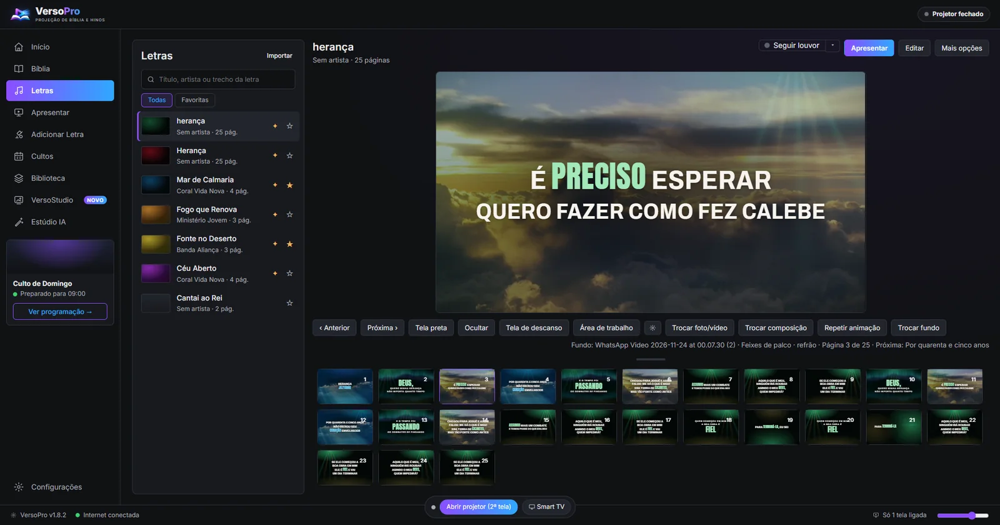
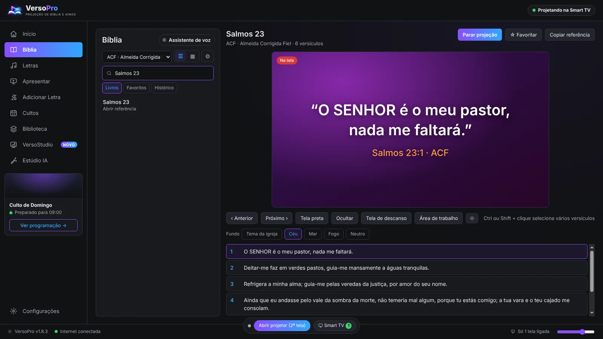
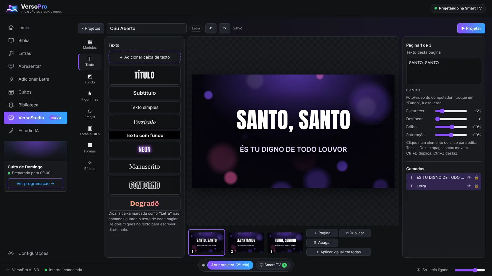
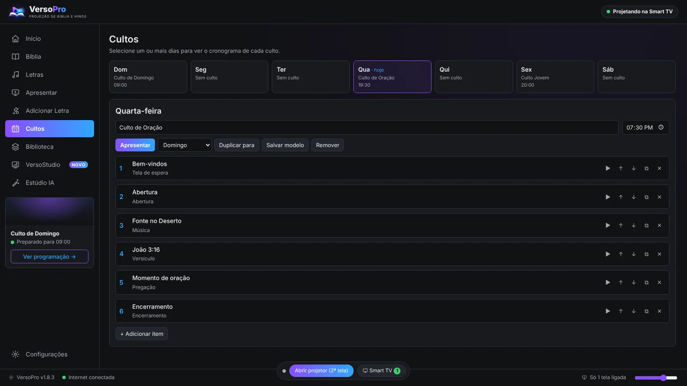
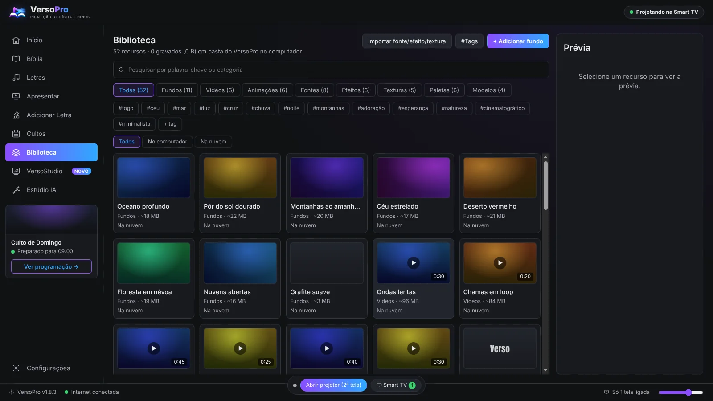
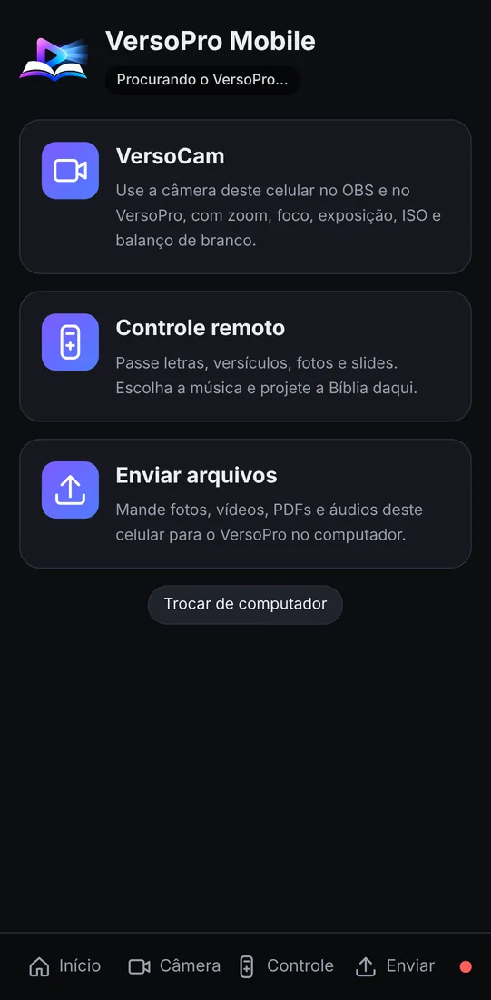
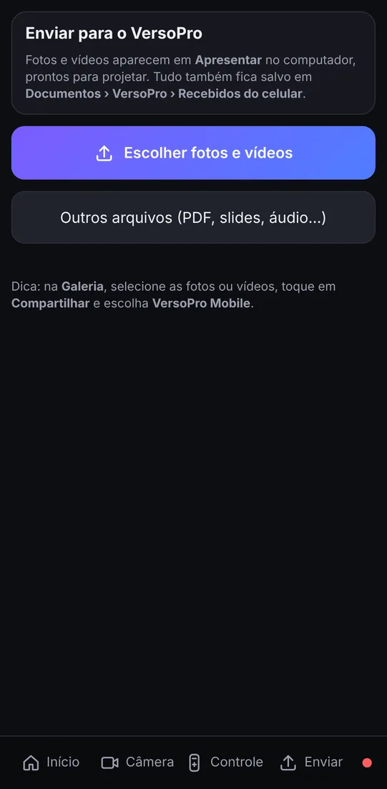

Letras e Bíblia na tela da sua igreja, lindas em um clique.
O VersoPro monta os slides sozinho, com fundos que combinam com cada louvor. Funciona sem internet, transforma o celular em câmera e controle remoto, e você paga uma vez só.
Letras✦Bíblia✦Fotos e vídeos✦Câmera do celular✦OBS na rede✦VersoStudio✦Harpa Cristã✦Holyrics✦Sem internet✦Letras✦Bíblia✦Fotos e vídeos✦Câmera do celular✦OBS na rede✦VersoStudio✦Harpa Cristã✦Holyrics✦Sem internet✦
Veja funcionando
Do louvor ao versículo, sem travar o culto.
Um minuto de demonstração com o programa de verdade, do jeito que ele roda no computador da igreja.
Vídeo de demonstração em breve
Tudo num programa só
Feito para quem opera a projeção no meio do culto.
Botões grandes, atalhos rápidos e nada de configurar slide por slide.
Letras com fundos automáticos
Cadastre ou importe a música e o VersoPro cria as páginas, destaca as palavras fortes e escolhe o fundo pelo tema da letra. Fala de fogo? Fundo de fogo. Fala de mar? Fundo de mar.
#tags por tema: #fogo, #céu, #mar, #cruz, #esperança e as suas próprias
Use suas fotos e vídeos em loop como fundo
Modo “Seguir louvor”: ouve o canto e sugere a próxima página
VersoPro · Letras

Bíblia na tela em segundos
Digite duas letras e o livro aparece: M+T abre Mateus, J+O abre João. Capítulo, Enter, versículo, Enter, e já está projetado.
Várias traduções e busca por palavra
Assistente de voz: ouve o pregador citar a referência e oferece projetar
Fundo do versículo combinando com o tema da igreja
VersoPro · Bíblia

VersoStudio: seu mini Canva
Crie avisos, boas-vindas, aniversariantes e letras com visual próprio. Fundos, figurinhas, emojis, GIFs, formas e efeitos em camadas, e o que você criar já aparece pronto para projetar.
Modelos prontos de slide e de letra
Textos com neon, contorno, degradê e animação
“Aplicar visual em todas” as páginas de uma vez
VersoPro · VersoStudio

Culto organizado na ordem certa
Monte a programação de cada dia da semana: boas-vindas, louvores, leitura, pregação e encerramento. Na hora, é só seguir a lista e apertar o play.
Programação por dia, com horário
Duplique o culto de domingo para a quarta
Fotos, vídeos, YouTube, slides e tela compartilhada em “Apresentar”
VersoPro · Cultos

Biblioteca com fundos, fontes e efeitos
Fundos em imagem e vídeo, animações, paletas, fontes, efeitos e texturas, tudo separado por #tag. Traga os seus arquivos e o VersoPro passa a usá-los nas letras.
Fontes já instaladas no programa, funcionam offline
Importe sua própria fonte, efeito ou textura
Crie #tags com as palavras da sua igreja
VersoPro · Biblioteca

App VersoPro Mobile · Android
O celular vira câmera e controle remoto.
Conecte pelo Wi-Fi da igreja, sem internet e sem cabo. Digite o PIN que aparece no computador e pronto.
VersoCam
Use a câmera do celular no telão e no OBS, com zoom, foco, exposição, ISO e balanço de branco.
Controle remoto
Passe letras, versículos, fotos e slides de qualquer lugar da igreja. Escolha a música e projete a Bíblia pelo celular.
Envie fotos e vídeos
Na galeria, toque em Compartilhar › VersoPro Mobile. As fotos chegam no computador prontas para projetar.


● AO VIVOTransmissão
O céu se abre sobre nósa glória enche a casa
Transmissão ao vivo
Letra e versículo na live, direto no OBS.
O VersoPro gera um link para colocar no OBS como “Navegador”. A letra aparece por cima da câmera, com fundo transparente, pela rede local. Sem plugin e sem conta.
Projetor na 2ª tela abre sozinho, em tela cheia
Câmera do celular também entra no OBS
Tela preta, tela de descanso e ocultar texto num toque
E ainda
Detalhes que fazem diferença no domingo.
Importa do Holyrics
Traz as músicas do Holyrics que já estão no PC, ou de um backup no pen drive, sem mexer em nada lá.
Harpa e hinários
Importe coleções inteiras de hinos de uma vez, com número, título e coro repetido depois de cada estrofe.
Funciona sem internet
Ativou uma vez, usa offline. A internet da igreja caiu? O culto continua.
Backup num arquivo só
Letras, cultos, fundos e configurações num único arquivo para guardar ou levar para outro PC.
IA no seu computador
Organize letras, crie fundos e traduza ao vivo usando IA local, sem mandar nada para fora. Opcional, para PCs com placa de vídeo.
Ouve o culto
Reconhece referências bíblicas faladas e acompanha o louvor para sugerir a próxima página.
Dois monitores fácil
Escolha em qual tela vai o projetor. Desconectou o cabo e ligou de novo? Ele volta sozinho.
Do jeito da sua igreja
Cores do tema, fontes, estilos de letra e animações para deixar a projeção com a cara do seu ministério.
Como funciona a compra
Em poucos minutos está projetando.
1
Compre a licença
Pagamento seguro pela loja. Você recebe a chave de ativação no e-mail.
2
Instale no Windows
Baixe o instalador e siga os passos. Não precisa ser administrador.
3
Ative e use
Cole a chave uma vez com internet. Depois disso, funciona offline.
Licença vitalícia
Sem mensalidade. É seu para sempre.
Uma chave por igreja, para usar em até dois computadores, por exemplo o da projeção e o da transmissão. Trocou de PC? Dá para transferir a licença.
Só para ativar a licença na primeira vez. Depois o VersoPro funciona sem internet, inclusive o celular, que conversa com o computador pelo Wi-Fi local. De tempos em tempos ele confere a licença quando encontra internet, mas isso nunca trava um culto.
Posso instalar em quantos computadores?
Uma licença vale para uma igreja e pode ficar ativa em até dois computadores ao mesmo tempo, como o da projeção e o da transmissão.
E se eu trocar de computador?
A licença é transferível: desative no computador antigo e ative no novo com a mesma chave.
Funciona no Mac ou no Linux?
Por enquanto o VersoPro é para Windows 10 e 11 (64 bits).
O app do celular funciona no iPhone?
O app VersoPro Mobile é para Android. No iPhone dá para usar a câmera e o controle pelo navegador, com menos ajustes de câmera.
Já uso o Holyrics. Perco minhas músicas?
Não. O VersoPro encontra as músicas do Holyrics no computador (ou num backup no pen drive) e importa tudo, sem alterar os arquivos do Holyrics.
Preciso de um computador potente?
Não. Um computador comum com Windows 10 ou 11 dá conta da projeção. Só os recursos de IA local, que são opcionais, pedem placa de vídeo dedicada.
O próximo culto pode ficar mais bonito.
Licença vitalícia, sem mensalidade, funcionando até sem internet.